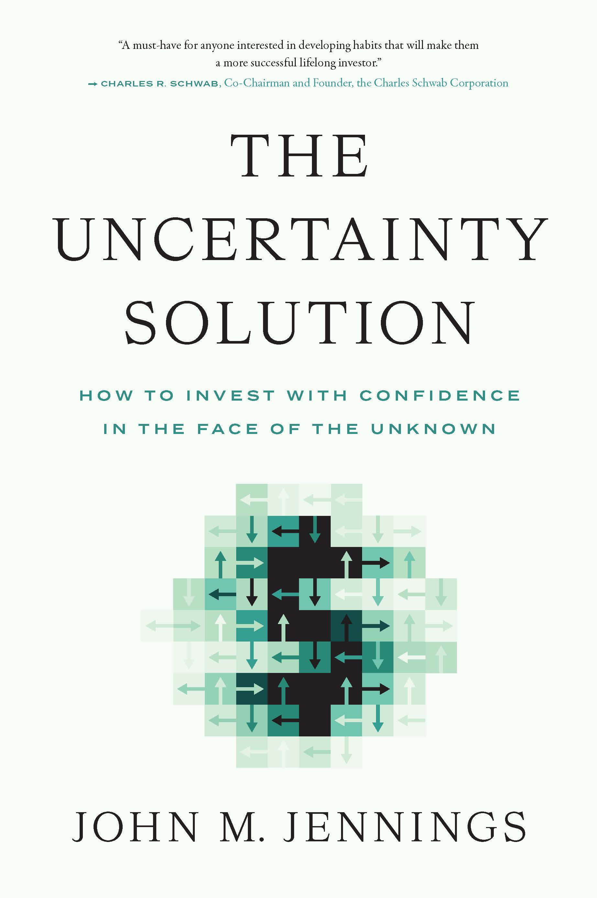

约翰·詹宁斯（John M. Jennings）是美国资产规模约150亿美元的财富管理公司St. Louis Trust & Family Office的总裁兼首席策略师，同时担任华盛顿大学奥林商学院（Olin Business School）的兼职教授，教授行为金融学课程。他拥有密苏里大学法律与金融双学位，并持有哈佛大学"投资决策与行为金融"专业证书。《不确定性的解法》于2023年5月由Greenleaf Book Group Press出版，是詹宁斯将二十余年财富管理实践与行为金融学研究融合而成的第一本著作，出版后获得2023年非虚构类图书奖金奖。
全书的核心命题是：投资市场的不确定性是本质属性而非暂时状态，因此正确的应对方式不是试图消除不确定性，而是改变自己与不确定性的关系。詹宁斯从心理学、决策科学和投资行为研究中归纳出一套"思维模型格栅"，涵盖人类大脑在处理市场信息时最常见的认知偏误——过度自信、叙事谬误、近因效应、对专家预测的盲目依赖——并逐一提供应对策略。其中最具反直觉价值的一个建议，是作者所谓的"像死人一样投资"：减少交易频率，拒绝对市场波动做出反应，让时间和复利来完成大部分工作。这一论点并非简单提倡被动投资，而是基于大量实证数据对投资者行为损耗的测算——主动干预往往使实际收益远低于账面收益。
查尔斯·R·施瓦布（Charles Schwab Corporation联合主席兼创始人）为本书作序并写道："《不确定性的解法》是任何希望养成良好投资习惯、成为更成功的终身投资者的人书架上不可或缺的一本书。"（"The Uncertainty Solution is a must-have addition to anyone's reading list who is interested in developing habits that will make them a more successful lifelong investor."）标普道琼斯指数董事总经理克雷格·拉扎拉（Craig Lazzara）亦表示："任何投资者都会从詹宁斯的见解与建议中受益。"Patrick Geddes（Aperio Group联合创始人）评价该书"为投资者提供了一张导航不确定性的实用地图"。
对于普通投资者而言，本书的价值不在于提供选股技巧或市场预测框架，而在于帮助读者认识到"如何思考投资"比"投资什么"更根本。詹宁斯借助心理学实验、历史市场数据和真实客户案例，将抽象的行为金融学原理转化为可操作的行动建议。无论是面对市场崩溃时的恐慌性抛售冲动，还是牛市中的追涨惯性，书中的分析框架都提供了一种更冷静的决策路径——不是依靠更多信息，而是依靠更好的思维习惯。这使它成为一本兼具学术深度与实践指向的投资心理学入门读物。